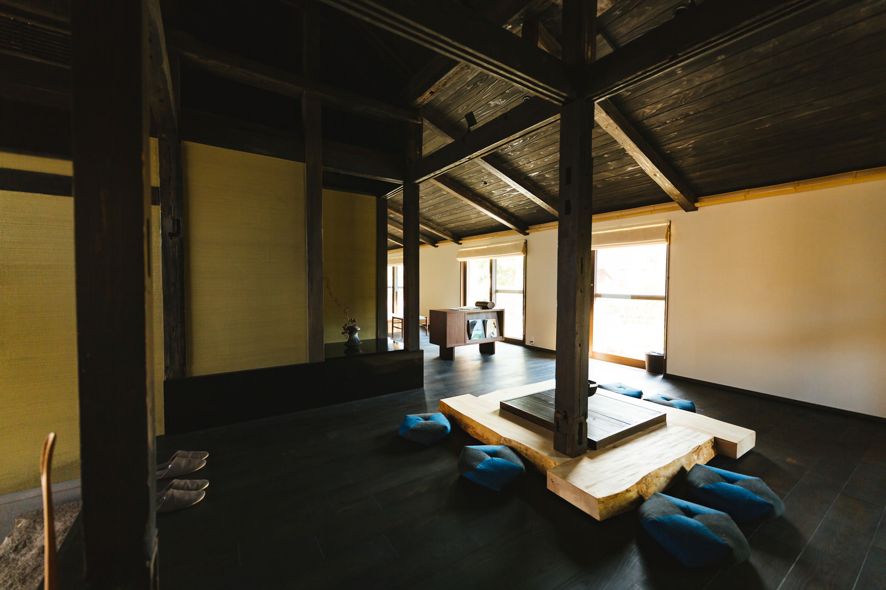

Heritage & Modern
受け継がれる、遠野の呼吸。

岩手県遠野市。古くから民話が息づくこの地で、
築五十年の古民家を再生しました。
太い梁や柱、風を通す縁側といった伝統的な建築美をそのままに、
現代の快適さを融合させた「モダンリトリート」。
窓を開ければ、遠野の山々を渡る風の音が聞こえ、
夜には囲炉裏の火が心を解きほぐします。
Hospitality
遠野での体験
地物と発酵の朝食
遠野の肥沃な大地で育った新鮮な野菜と、古くからこの地に伝わる発酵文化を取り入れた朝食。身体の芯から目覚める時間をお届けします。
満天の星空
夜には、都会では決して見ることのできない、こぼれ落ちそうなほどの星空が広がります。宇宙の広がりを感じるひとときを。
囲炉裏を囲む夜
かつて家族が集った囲炉裏を現代に再現。薪のはぜる音をBGMに、地元の銘酒や温かいお茶を片手にお寛ぎください。